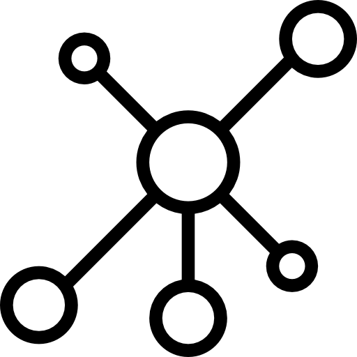

Random Walk with Restart (RWR) is an algorithm developed to provide the distance (or closennes) between nodes in a graph. To do so, RWR simulates an imaginary particle that starts on a seed(s) node(s) and follows randomly the edges of a network. At each step, there is a restart probability, r, meaning that the particle can come back to the seed(s).
This package provides an easy interface to apply RWR on different types of complex networks:
A monoplex or single network, which contains solely nodes of the same nature. In addition, all the edges belong to the same category.
A multiplex network, defined as a collection of monoplex networks considered as layers of the multiplex network. In a multiplex network, the different layers share the same set of nodes, but the edges represent relationships of different nature. In this case, the RWR particle can jump from one node to its counterparts on different layers.
A heterogeneous network, which is composed of two monoplex networks containing nodes of different nature. These different kind of nodes can be connected thanks to bipartite edges, allowing the RWR particle to jump between the two networks.
A multiplex and heterogeneous network, which is built by linking the nodes in every layer of a multiplex network to nodes of different nature thanks to bipartite edges.
A full multiplex and heterogeneous network, in which the two networks connected by bipartite interactions are of multiplex nature. The RWR particle can now explore the full multiplex-heterogeneous network.
The user can integrate single networks (monoplex networks) to create a multiplex network. The multiplex network can also be integrated, thanks to bipartite relationships, with another multiplex network containing nodes of different nature. Proceeding this way, a network both multiplex and heterogeneous will be generated.
This package was developed in the context of the following publication:
A Valdeolivas, L Tichit, C Navarro, S Perrin, G Odelin, N Levy, P Cau, E Remy, and A Baudot. 2018. “Random walk with restart on multiplex and heterogeneous biological networks.” Bioinformatics 35 (3). DOI: https://doi.org/10.1093/bioinformatics/bty637
Older versions of RandomWalkRestartMH were distributed through Bioconductor. The maintained version can be installed directly from this GitHub repository:
# install.packages("pak")
pak::pkg_install("alberto-valdeolivas/RandomWalkRestartMH")Then, we strongly suggest to visit the package website and explore the vignette for a proper usage: